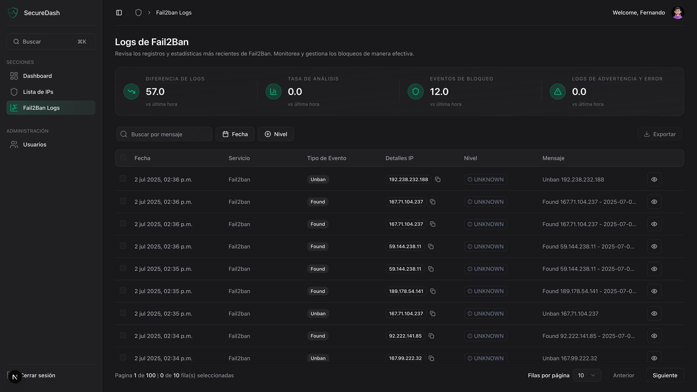
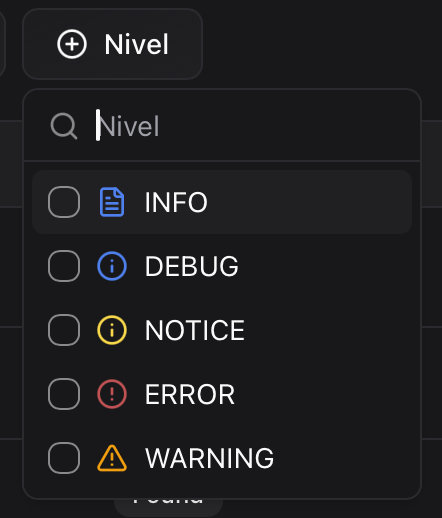
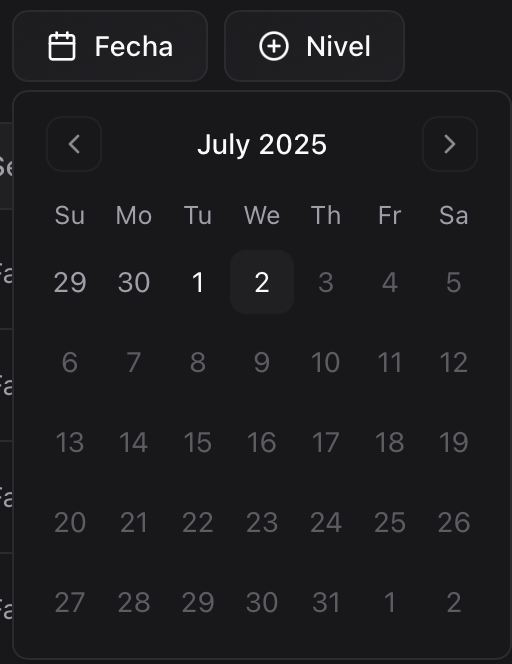
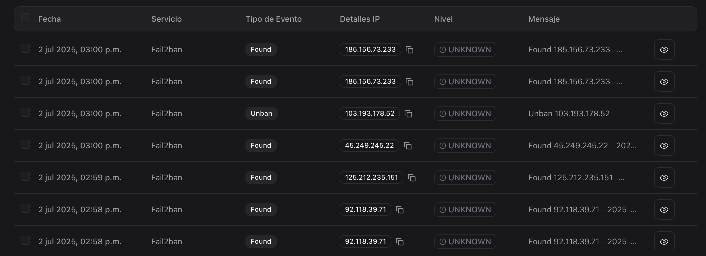
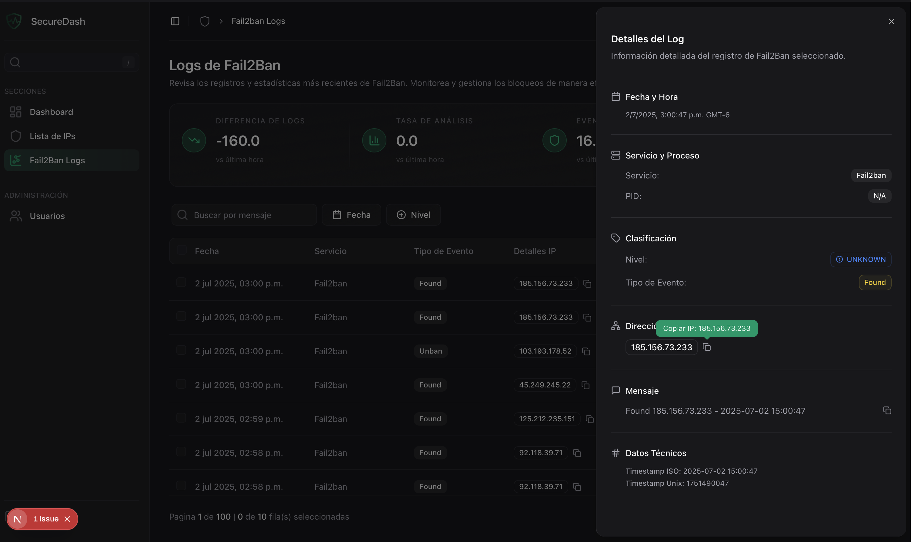
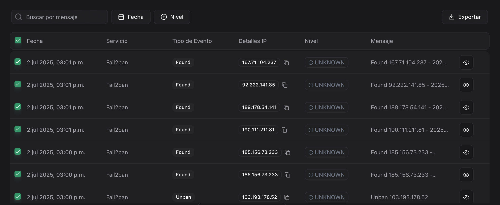

Gestión de Logs de Fail2Ban#
La sección de logs es fundamental para monitorear la actividad de seguridad en tiempo real y analizar patrones de ataques.
 Vista General de Logs#
Vista General de Logs#
Pantalla Principal#

La sección de logs está dividida en:
- Estadísticas Generales - Métricas rápidas del sistema
- Herramientas de Filtrado - Búsqueda y filtros avanzados
- Tabla de Logs - Visualización detallada de eventos
- Panel de Detalles - Información específica de eventos
 Búsqueda y Filtros#
Búsqueda y Filtros#
Barra de Búsqueda#
Búsqueda por Mensaje#
- Búsqueda en tiempo real mientras escribes
- Coincidencias parciales en el contenido del log
- Resaltado automático de términos encontrados
Ejemplos de búsqueda:
• "Failed password" - Busca intentos de login fallidos
• "Invalid user" - Encuentra usuarios inexistentes
• "Connection refused" - Localiza conexiones rechazadas
Filtros Avanzados#
Filtro por Nivel de Log#

- Color: Azul
- Descripción: Información general del sistema
- Ejemplos: Conexiones exitosas, estadísticas
- Color: Amarillo
- Descripción: Advertencias que requieren atención
- Ejemplos: Intentos de acceso sospechosos
- Color: Rojo
- Descripción: Errores críticos del sistema
- Ejemplos: Fallos de autenticación, ataques detectados
Filtro por Fecha y Hora#

Opciones Disponibles: - Fecha específica usando calendario - Rango de fechas para análisis histórico
Aplicación de Filtros#
Uso Combinado#
- Múltiples filtros se pueden aplicar simultáneamente
- Reset rápido para limpiar todos los filtros
Persistencia#
- Filtros mantenidos durante la sesión
- URL actualizada para compartir búsquedas
- Historial de filtros en navegador
:table: Tabla de Logs#
Estructura de la Tabla#

Columnas Disponibles#
| Columna | Descripción | Características |
|---|---|---|
| Timestamp | Fecha y hora del evento | Ordenable, formato local |
| Level | Nivel de severidad | Badge con color |
| Message | Contenido del log | Texto completo, buscable |
| Actions | Acciones disponibles | Ver detalles, copiar |
Funcionalidades de Tabla#
- Clic en headers para ordenar columnas
- Orden ascendente/descendente disponible
- Ordenación múltiple manteniendo Shift
- 10, 25, 50 logs por página
- Navegación rápida entre páginas
- Salto directo a página específica
- Checkbox individual por fila
- Selección múltiple con Ctrl/Cmd
- Seleccionar todo en página actual
Visualización de Logs#
Formato de Timestamp#
- Formato local según configuración del navegador
- Precisión de segundos para análisis detallado
- Indicador relativo (hace 5 minutos)
Indicadores Visuales#
- Badges de nivel con códigos de color
- Iconos contextuales según tipo de evento
- Resaltado de texto para términos de búsqueda
 Panel de Detalles#
Panel de Detalles#
Hoja de Detalles Lateral#

Información Completa#
Metadatos del Evento: - ID único del log - Timestamp preciso con milisegundos - Nivel de severidad con descripción - Fuente del evento
Contenido del Log: - Mensaje completo sin truncar - Contexto adicional si está disponible - Información técnica relevante
Análisis Contextual: - Frecuencia de eventos similares - Patrones relacionados detectados - Recomendaciones de acción
Navegación en Detalles#
Controles Disponibles#
- Cerrar panel con botón X o Escape
- Copiar contenido al portapapeles
- Navegación previa/siguiente entre logs
- Enlace directo para compartir
Información Técnica#
- Servidor de origen
- Proceso que generó el log
- Configuración aplicada
- Tipo de amenaza detectada
- Nivel de riesgo calculado
- Acciones recomendadas
- IP de origen (cuando aplique)
- Puerto utilizado
- Protocolo de conexión
 Herramientas de Gestión#
Herramientas de Gestión#
Acciones en Lote#

Operaciones Disponibles#
- Formato CSV para análisis externo
- Filtros aplicados incluidos en exportación
Configuración de Exportación#
Opciones de Formato: - CSV: Ideal para Excel y análisis de datos
Personalización: - Rango de fechas específico
Funciones Administrativas#
Solo para Administradores#
- Purga de logs antiguos
- Configuración de retención
- Optimización de rendimiento
- API endpoints para logs
- Webhooks para notificaciones
 Actualización en Tiempo Real#
Actualización en Tiempo Real#
Sistema WebSocket#
Logs en Vivo#
- Nuevos eventos aparecen automáticamente
- Notificación visual para nuevos logs críticos
- Scroll automático opcional a eventos recientes

Gestión de Volumen#
- Límite de 10 logs visibles simultáneamente
- Paginación automática para volumen alto
- Agregación inteligente de eventos similares
Notificaciones Push#
Alertas Críticas#
- Toast notifications para eventos ERROR
- Sonido opcional para alertas críticas
- Persistencia hasta reconocimiento
 Mejores Prácticas#
Mejores Prácticas#
Monitoreo Efectivo#
Consejos de Uso
- Revisa logs críticos al menos cada hora
- Establece filtros para tus casos de uso
- Exporta datos regularmente para análisis offline
- Mantén ventana abierta para alertas en tiempo real
Análisis de Incidentes#
Flujo Recomendado
- Identifica evento crítico en logs
- Aplica filtros para contexto temporal
- Busca patrones relacionados
- Exporta evidencia relevante
- Documenta hallazgos para futuras referencias
Optimización de Rendimiento#
Consideraciones
- Limita búsquedas a rangos de tiempo específicos
- Usa filtros antes de aplicar búsquedas de texto
- Exporta datos en lotes para análisis pesado
- Purga logs antiguos regularmente
 Solución de Problemas#
Solución de Problemas#
Problemas Comunes#
Síntomas: Tabla vacía o sin datos recientes
Posibles causas: - Filtros muy restrictivos - Problemas de conexión WebSocket - Fail2ban no está funcionando
Soluciones: - Limpia todos los filtros - Refresca la página - Verifica estado de Fail2ban en servidor
Síntomas: Demora en mostrar resultados
Posibles causas: - Volumen muy alto de logs - Búsquedas sin filtros temporales - Recursos del servidor limitados
Soluciones: - Aplica filtros de fecha primero - Usa términos de búsqueda específicos - Contacta administrador si persiste
Síntomas: Error al descargar datos
Posibles causas: - Demasiados registros seleccionados - Permisos insuficientes - Problema temporal del servidor
Soluciones: - Reduce rango de fechas - Verifica tus permisos de usuario - Intenta nuevamente más tarde
Límites del Sistema
- Máximo 10,000 logs por exportación
- Búsquedas limitadas a 90 días hacia atrás
- Actualización en tiempo real puede pausarse con alto volumen